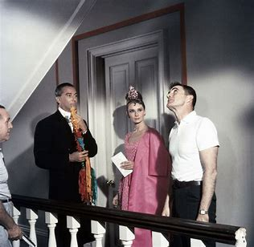

"Breakfast at Tiffany's," the 1961 romantic comedy, welcomes audiences into the whimsical world of Holly Golightly, a captivating and enigmatic socialite living in New York City. Directed by Blake Edwards and based on Truman Capote's novella, this iconic film weaves a tale of love, self-discovery, and the pursuit of dreams.
At the center of the story is the effervescent Holly Golightly, portrayed by the legendary Audrey Hepburn. Holly's charm and charisma enchant everyone she meets, but beneath her glamorous façade lies a woman searching for true love and a place to belong. Amidst the glittering lights of Manhattan, Holly's life takes an unexpected turn when she becomes entangled with Paul Varjak, a struggling writer played by George Peppard. As their unlikely friendship blossoms into something deeper, both Holly and Paul must confront their pasts and embrace the possibilities of the future.
Directed by - Directed by: Blake Edwards
Based on: Truman Capote's novella "Breakfast at Tiffany's"
Produced by: Martin Jurow, Richard Shepherd
Distributed by: Paramount Pictures
Budget: Approximately $2.5 million USD
Worldwide Box Office Gross:Approximately $14 million USD (as of 1961, the year of its release)
Awards and Nominations
Academy Awards (1962):Best Actress: Audrey Hepburn (nominated)
Golden Globe Awards (1963) Best Original Song: "Moon River" (won)
BAFTA Awards (1962):Best British Actress: Audrey Hepburn (nominated)
Grammy Awards (1962):Song of the Year: "Moon River" (won) and Record of the Year: "Moon River" (won)
"Breakfast at Tiffany's" revolves around the charming and enigmatic Holly Golightly, a young woman living a carefree and extravagant lifestyle in New York City. As an aspiring socialite, she spends her days attending parties and seeking the company of wealthy men to support her luxurious lifestyle. Holly's neighbor and acquaintance, a struggling writer named Paul Varjak, becomes intrigued by her eccentric personality.
The film delves into themes of identity, love, and the pursuit of happiness, with Holly's search for authenticity and love serving as the heart of the story. As the plot unfolds, both Holly and Paul confront their own vulnerabilities and discover that genuine happiness and love may come from unexpected sources. "Breakfast at Tiffany's" is a timeless exploration of human connections and the complexities of finding one's true self amid the dazzling backdrop of New York's high society.
Behind the scenes

Directed by Blake Edwards and based on Truman Capote's novella, the production brought together a talented cast and crew to create a memorable cinematic experience. Audrey Hepburn's portrayal of Holly Golightly solidified her status as a Hollywood legend. The casting process initially considered Marilyn Monroe for the role, but Audrey's captivating performance ultimately defined the character and made Holly Golightly an enduring cultural icon. Director Blake Edwards skillfully guided the narrative, blending comedy, romance, and drama to perfection. His vision, combined with the exquisite costume design by Hubert de Givenchy, contributed to the film's timeless elegance
The film's impact extended beyond its artistic merits, influencing fashion, popular culture, and the perception of romantic comedies. Audrey Hepburn's little black dress, the stylish New York setting, and the memorable theme song "Moon River" became emblematic elements of the film's enduring legacy. Overall, the collaboration of a talented cast and crew, coupled with the director's artistic vision, brought to life a timeless film that continues to inspire and delight audiences across generations. "Breakfast at Tiffany's" remains an unparalleled classic, cherished for its endearing characters, unforgettable moments, and Audrey Hepburn's incomparable performance.
Did you know?
The name of the ginger cat that Holly Golightly cares for in the film is "Cat." However, the cat's real name was "Orangey," and it was a highly trained animal actor who appeared in several other films and TV shows.
Audrey Hepburn's singing in the film was dubbed by Marni Nixon, a renowned ghost singer who also dubbed for other actresses like Natalie Wood in "West Side Story" and Deborah Kerr in "The King and I."
"Breakfast at Tiffany's" was a massive commercial success, becoming one of the highest-grossing films of 1961 and earning over $14 million at the box office.
Audrey Hepburn's portrayal of Holly Golightly became one of her most iconic roles and is often considered a defining moment in her career. The character's iconic style, including the little black dress and oversized sunglasses, became synonymous with Audrey Hepburn's image.